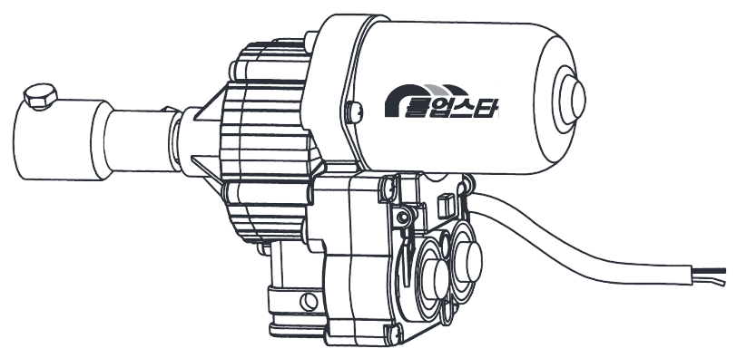
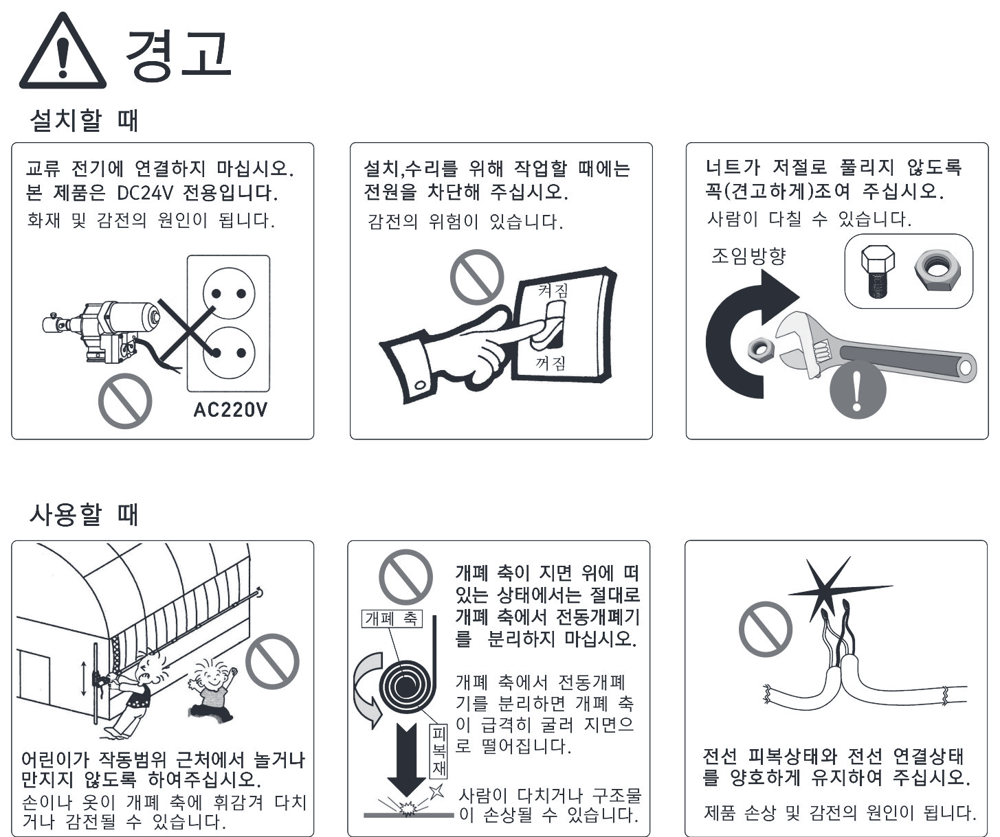
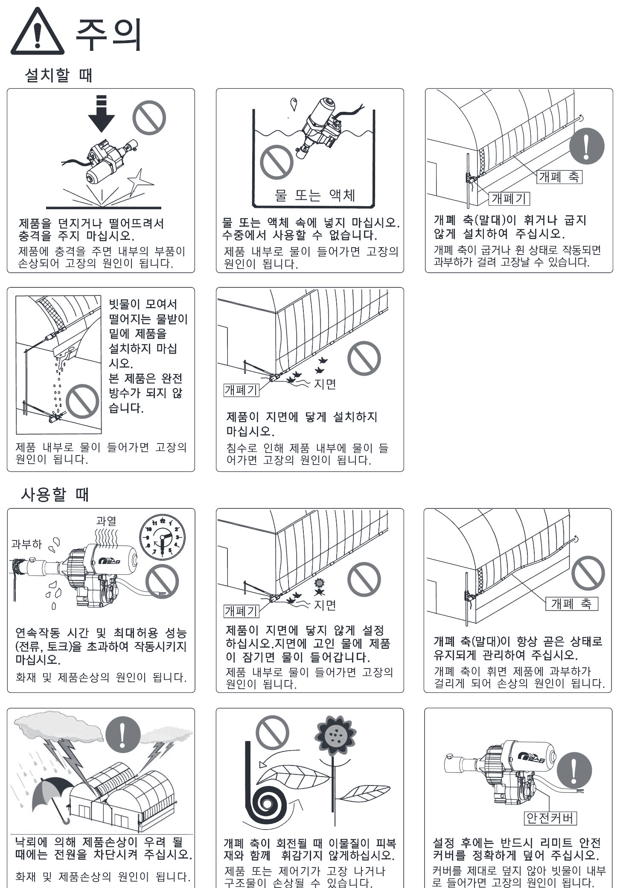
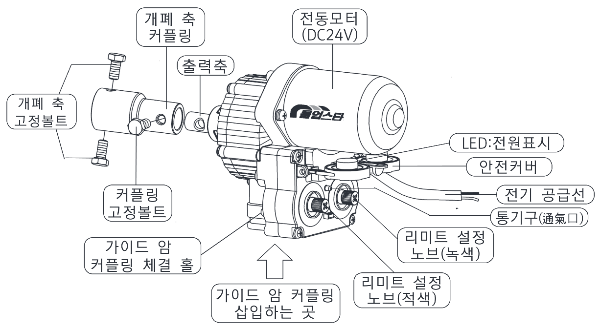
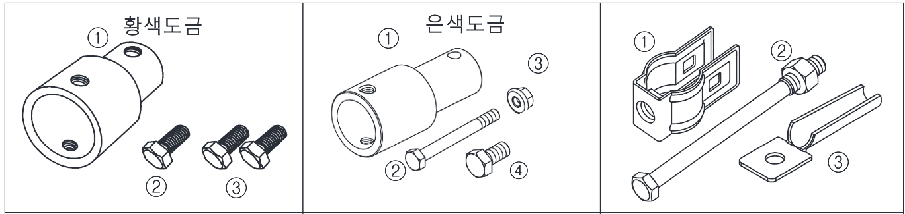
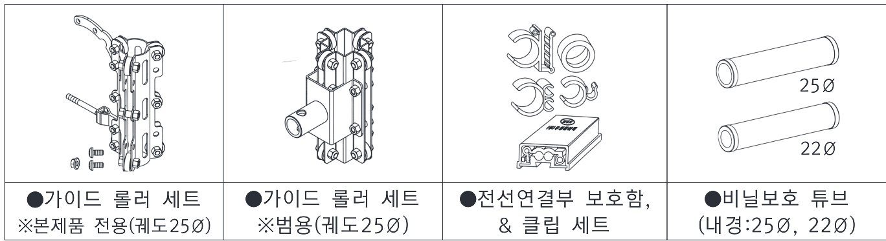
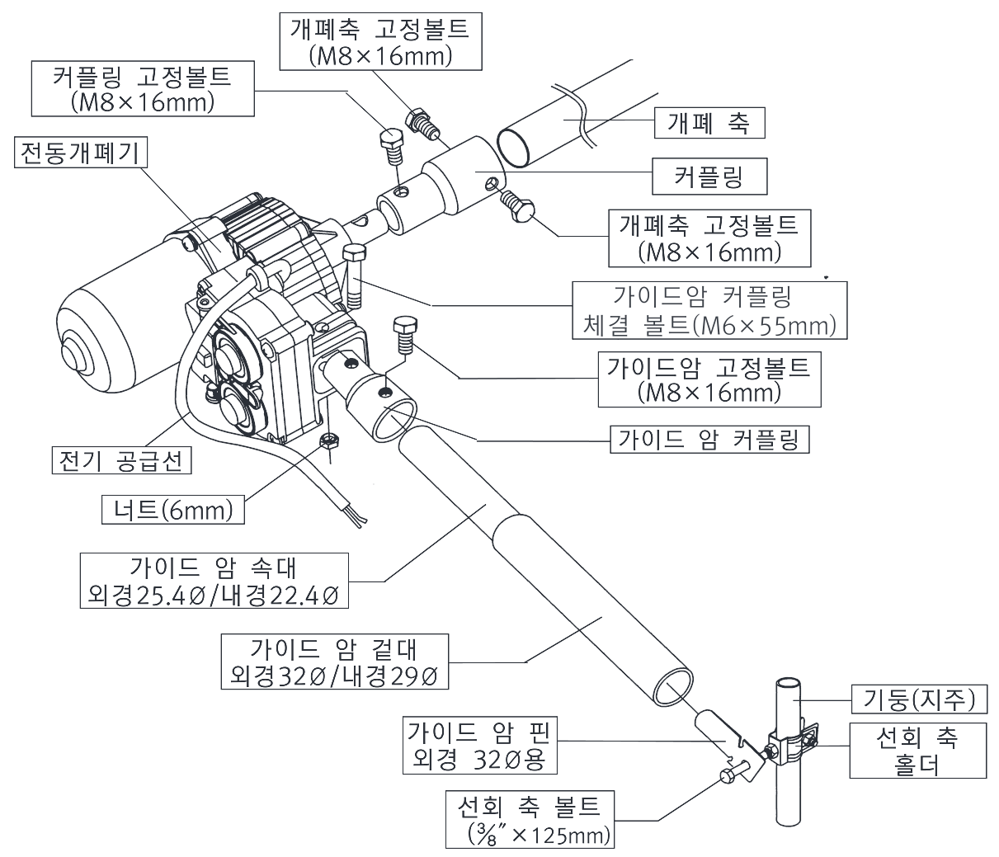
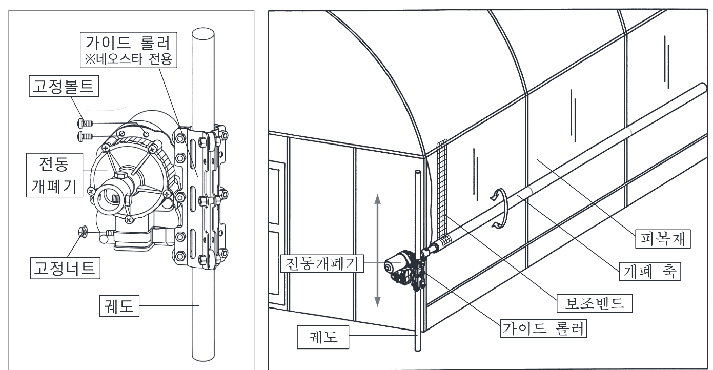
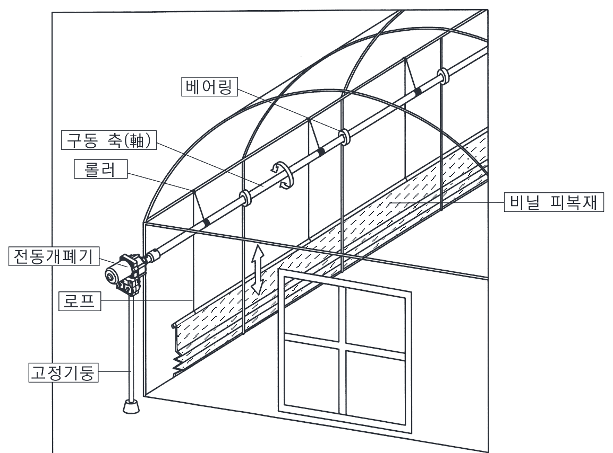
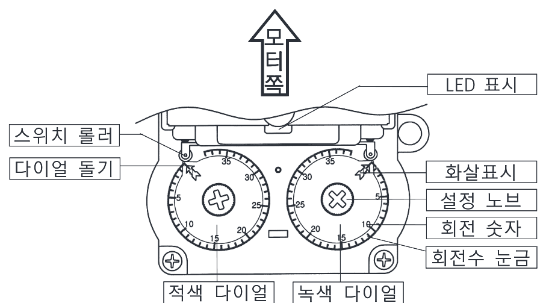

전동개폐기 사용설명서

원하는 항목을 눌러 이동하세요. 페이지는 좌우로 밀거나(스와이프) 아래 이전/다음 버튼으로 넘길 수 있습니다.
Ⅰ. 안전을 위한 주의사항
아래 안전 주의사항은 제품을 안전하고 정확하게 사용하여 예기치 못한 위험이나 손해를 사전에 방지하기 위한 것입니다.
지키지 않으면 사용자가 사망하거나 중상을 입을 수 있습니다.
지키지 않으면 부상·재산피해가 발생할 수 있습니다.
위험을 피하기 위해 주의 깊게 살펴보고 반드시 따라야 하는 사항.
위험을 방지하기 위해 피해야 하는 사용방법.
원본 안전 그림 보기 (설명서 3~4p)


Ⅱ. 제품 사양 및 성능
본 제품은 두꺼운 비닐필름 피복재 개폐 전용입니다.
| 입력전압 | DC 24V (±10% 이내) |
|---|---|
| 감속비 | 1/785 |
| 감속방식 | 1차 헬리컬 기어 / 2차 유성기어 |
| 제동기능 | 셀프 브레이크(Self Brake) |
| 회전방향 | 양방향 (전기 극성으로 변경) |
| 리미트 방식 | 2개 다이얼 돌기에 의한 스위치 작동 |
| 리미트 설정 | 조정 노브(Knob)를 돌려서 설정 · 최대 35회전 |
| 밀폐 상태 | 빗물유입 방지 (완전방수 아님) |
| 통기 방식 | 리미트 커버에 통기구멍 |
| 몸체 / 기어 | 알루미늄 합금 / SCM415(침탄 열처리) |
| 외관도장 | 분체 도장 |
| 전원표시 | LED (2컬러 발광 다이오드) |
| 전원공급선 | VCTF 1.0×2C (갈색·녹색) |
| 무게(본체) | 2.8 Kg |
💡 토크란 회전시키는 힘. 표준 6kg·m = 회전축 중심에서 1m 떨어진 지점에 6kg을 매달고 1분에 4회전 시킬 수 있는 힘(이때 소비전류 약 3.5A).
- 전원공급 전선을 잡아당기거나 전선을 잡고 들어 올리지 마십시오.
- 전선 연결부위가 합선·누전되지 않게 설치하십시오.
- 정격전압(DC 24V)을 사용하십시오.
- 최대허용 성능(전류·토크)을 초과하여 사용하지 마십시오.
- 연속작동 사용시간을 지키십시오.
- 제품이 지면에 닿지 않게 하십시오. 빗물 고인 곳에 닿으면 물이 유입됩니다.
- 리미트 설정 후에는 반드시 안전커버를 닫아 빗물이 들어가지 않게 하십시오.
- 작동 중 소음이 심하면 운전을 중지하고 점검하십시오.
- 점검을 위해 분리할 때는 먼저 전원 공급을 차단하십시오.
- 볼트·너트 등 소모성 부품을 점검하여 파손 전에 새것으로 교환하십시오.
- 물(액체)에 넣거나 습기가 많은 장소에 보관하지 마십시오.
Ⅲ. 각부 명칭

12345678910111213- 전동모터 (DC24V)
- 개폐 축 커플링
- 출력축
- 개폐 축 고정볼트
- 커플링 고정볼트
- 가이드 암 커플링 체결 홀
- 가이드 암 커플링 삽입부
- LED (전원표시)
- 안전커버
- 전기 공급선
- 통기구
- 리미트 설정 노브 (녹색)
- 리미트 설정 노브 (적색)

- 커플링 1개 (25∅용)
- 커플링 고정볼트 1개 (M8×16mm)
- 개폐 축 고정볼트 2개 (M8×16mm)
- 커플링 1개 (25∅용)
- 볼트 1개 (M6×55mm) / 너트 1개 (M6mm)
- 볼트 1개 (M8×16mm)
- 선회 축 고정 홀더
- 선회 축 볼트(너트 포함)
- 가이드 암 핀 (기본 32∅용) ※19∅용으로 변경 주문 가능

Ⅳ. 설치방법
원예시설 형태는 매우 다양하며 설치방법도 다양합니다. 아래는 대표적인 방법의 [예]이며, 자세한 것은 원예시설 자동화 전문업체와 상담하여 현장에 알맞게 설치하십시오.
 1234
1234- 피복재
- 개폐 축
- 천장 곡부용 전동개폐기 (가이드 암 방식)
- 측면용 전동개폐기 (가이드 롤러 방식)
구조물(들보)에 피복재 상단을 고정하고 하단을 개폐 축에 감아 클립으로 고정합니다. 전동개폐기로 개폐 축을 회전시키면 피복재가 감기며 환기구가 열리고, 반대로 돌리면 풀리며 닫힙니다. 이때 피복재가 반대로 풀리려는 힘이 작용하므로, 이를 받쳐주는 가이드 암 또는 가이드 롤러를 사용해 설치합니다.
1) 가이드 암을 사용하여 설치 (자세히)
기능 — 개폐 축에 감긴 피복재가 반대로 풀리려는 힘을 가이드 암이 받쳐 풀리지 않게 합니다.
길이 변화 — 닫혔을 때는 짧아지고 열렸을 때는 길어지므로, 길이가 쉽게 늘고 줄도록 곧은 파이프를 사용합니다.
- 가이드 암은 규격이 다른 2개 파이프로 구성 — 겉대 내경 29∅(외경 32∅), 속대 외경 25.4∅(내경 22.4∅)
- 최대 길이에서도 속대가 겉대 속에서 완전히 빠지지 않게 길이를 맞춤
- 최대 길이에서 전선이 당겨지지 않도록 여유 있게 연결
- 전동개폐기 무게로 피복재가 처지지 않게 보조밴드 설치

123452678910111213141516- 커플링 고정볼트 (M8×16mm)
- 개폐 축 고정볼트 (M8×16mm)
- 전동개폐기
- 개폐 축
- 커플링
- 가이드 암 커플링 체결 볼트 (M6×55mm)
- 가이드 암 고정볼트 (M8×16mm)
- 가이드 암 커플링
- 전기 공급선
- 너트 (6mm)
- 가이드 암 속대 (외경 25.4Ø / 내경 22.4Ø)
- 가이드 암 겉대 (외경 32Ø / 내경 29Ø)
- 가이드 암 핀 (외경 32Ø용)
- 선회 축 볼트 (⅜″×125mm)
- 기둥 (지주)
- 선회 축 홀더
2) 가이드 롤러를 사용하여 설치 (자세히)
가이드 롤러(궤도)로 개폐 축을 지지하는 방식이며, 롤러 지름에 따라 1회전당 개폐량이 달라집니다.
예) 롤러 지름 3cm → 3×3.14 = 9.42cm. 즉 1회전에 피복재가 9.42cm 열립니다.

12345356781- 가이드 롤러 (네오스타 전용)
- 고정볼트
- 전동개폐기
- 고정너트
- 궤도
- 피복재
- 개폐 축
- 보조밴드
2. 로프 예인 개폐방식 (자세히)
피복재 한쪽을 로프로 묶어 구동축에 감거나 풀어 여닫는 방식으로, 주로 측면 피복재 개폐에 사용합니다. 골조파이프에 베어링으로 구동축을 설치하고, 롤러(도르래)를 통과한 로프를 구동축에 고정한 뒤 회전시키면 로프가 감기며 환기구가 닫히고, 반대로 돌리면 열립니다.

1234567- 베어링
- 구동 축
- 롤러
- 비닐 피복재
- 전동개폐기
- 로프
- 고정기둥
Ⅴ. 전원 연결 · 회전방향
전선 극성에 따라 회전방향이 바뀌고 LED 색이 달라집니다.
당사 컨트롤러는 운전스위치 위치에 따라 단자 극성이 바뀝니다.
| 운전스위치 | 왼쪽 단자 | 오른쪽 단자 |
|---|---|---|
| 열림 | ＋극 | －극 |
| 닫힘 | －극 | ＋극 |
※ 타사 컨트롤러는 극성이 다를 수 있으니 해당 설명서를 참고해 극성을 미리 숙지하십시오.
전동개폐기는 설치 위치(좌/우)에 따라 개폐 축 회전방향이 달라, 좌·우에 전기극성을 반대로 공급해야 합니다. (아래는 보는 방향 기준)
| 열림 시 회전 | 청색선 | 갈색선 | |
|---|---|---|---|
| 좌측용 | 시계방향 ↻ | 왼쪽 단자 | 오른쪽 단자 |
| 우측용 | 반시계 ↺ | 오른쪽 단자 | 왼쪽 단자 |
Ⅵ. 리미트 설정부 알기

12345678910- 모터쪽 (방향)
- LED 표시
- 스위치 롤러
- 다이얼 돌기
- 화살표시
- 설정 노브
- 회전 숫자
- 회전수 눈금
- 적색 다이얼
- 녹색 다이얼
피복재가 열리고 닫히는 총 범위를 개폐 폭이라 하며, 상단 정지 위치를 열림 한계점, 하단 정지 위치를 닫힘 한계점이라 합니다. 전기가 계속 공급되어도 한계점에 도달하면 스스로 정지되도록, 리미트 스위치부에 구동축 회전수를 설정하는 것입니다. (리미트=한계·경계·한도)
- 적색·녹색 다이얼은 구동축과 기어로 연결되어 있습니다.
- 설정 노브를 눌러 잡으면 기어 연결이 해제되어 다이얼을 돌려 설정할 수 있습니다.
- 다이얼 화살표 끝의 돌기가 스위치 롤러를 누르면 작동이 정지됩니다. — 적색 LED일 때는 적색 돌기가, 녹색 LED일 때는 녹색 돌기가 롤러를 눌러야 정지.
- 설정 후 노브에서 손을 떼면 다이얼이 다시 구동축과 기어 연결됩니다.
- DC 24V가 공급되면 LED가 점등(ON)되며, 작동이 정지되어도 점등됩니다.
- 갈색선 ＋ · 청색선 － → 적색 점등
- 갈색선 － · 청색선 ＋ → 녹색 점등
Ⅶ. 리미트 설정하기 (실습)
2개 다이얼로 개폐 폭을 설정합니다. 아래 시뮬레이터로 직접 눌러보며 원리를 익혀보세요.
- 양쪽 화살표를 0에 맞춤 (안전 상태 · 전기 넣어도 정지)
- 녹색 다이얼로 열림 회전수 설정
- 열림 작동 → 돌기가 롤러 눌러 자동 정지
- 닫힘 작동 → 반대 돌기가 롤러 눌러 자동 정지
- 완료 (열린 만큼 자동으로 닫힘)
좌측용 설정 (열림·닫힘)
- 전기 공급 전 양쪽 화살표를 모두 "0"에 맞춤. (둘 다 0이면 DC24V를 넣어도 작동 안 함)
- 컨트롤러 운전스위치를 열림으로 → 청색＋·갈색－ 공급 → LED 녹색 점등.
- 녹색 노브를 시계방향으로 돌려 화살표를 원하는 회전수 눈금에 맞춤. (적색은 0 그대로)
- 구동축이 시계방향으로 회전하며 열림. 녹색 화살표는 롤러 쪽으로, 적색 화살표는 롤러에서 멀어짐.
- 녹색 돌기가 녹색 롤러를 누르면 자동 정지. (적색 화살표는 회전한 숫자만큼 이동)
- 운전스위치를 닫힘으로 → LED 적색, 구동축 반시계 회전하며 닫힘.
- 적색 화살표가 시계방향으로 적색 롤러 쪽으로 이동, 녹색 화살표는 멀어짐.
- 적색 돌기가 적색 롤러를 누르면 자동 정지. — 별도로 설정하지 않아도 열린 만큼 동일하게 닫힘.
우측용 설정 (거울대칭)
우측용은 전기 공급 전 양쪽 화살표를 모두 "0"에 맞추는 것은 같고, 극성·회전방향·설정 다이얼이 반대입니다.
- 열림 — 운전스위치 열림 → 갈색＋·청색－ → LED 적색, 구동축 반시계 회전. 적색 노브를 반시계로 돌려 열림 회전수 설정(녹색은 0). 적색 돌기가 롤러를 누르면 정지.
- 닫힘 — 운전스위치 닫힘 → LED 녹색, 구동축 시계 회전. 녹색 돌기가 롤러를 누르면 정지. 열린 만큼 자동으로 닫힘.
※ 위 시뮬레이터에서 우측용을 선택하면 극성·LED·회전방향·설정 다이얼이 자동으로 바뀝니다.
전체 설명서 (원본)
이 웹설명서는 원본 PDF의 모든 내용을 담고 있습니다. 원본 스캔이 필요할 때만 아래에서 펼쳐 보세요.
📄 PDF 원본 다운로드 (20p · 4.4MB)원본 스캔 20페이지 펼쳐보기
A/S · 제품보증
유상서비스 대상 (무상기간 내라도 유상 처리)
- 전기용량(전압)·전기종류를 틀리게 연결하여 고장난 경우
- 최대허용 전류·토크 이상 사용으로 과부하 고장
- 정격퓨즈를 사용하지 않아 고장
- 떨어뜨림·충격으로 인한 파손·기능 고장
- 소비자가 임의 분해하여 부속품 분실·파손
- 물에 잠기게 하거나 안전커버를 덮지 않아 내부 침수
- 천재지변(낙뢰·화재·풍수해·염해·지진 등)에 의한 고장
※ 교환·수리·환불 등 기타 보상은 소비자 피해보상기준에 따릅니다. 고장이 아닌 단순 조정·재설치는 요금이 부과될 수 있으니 반드시 사용설명서를 먼저 읽어 주십시오.
팩스 055-365-8333 · e-mail wsh@wsh.co.kr